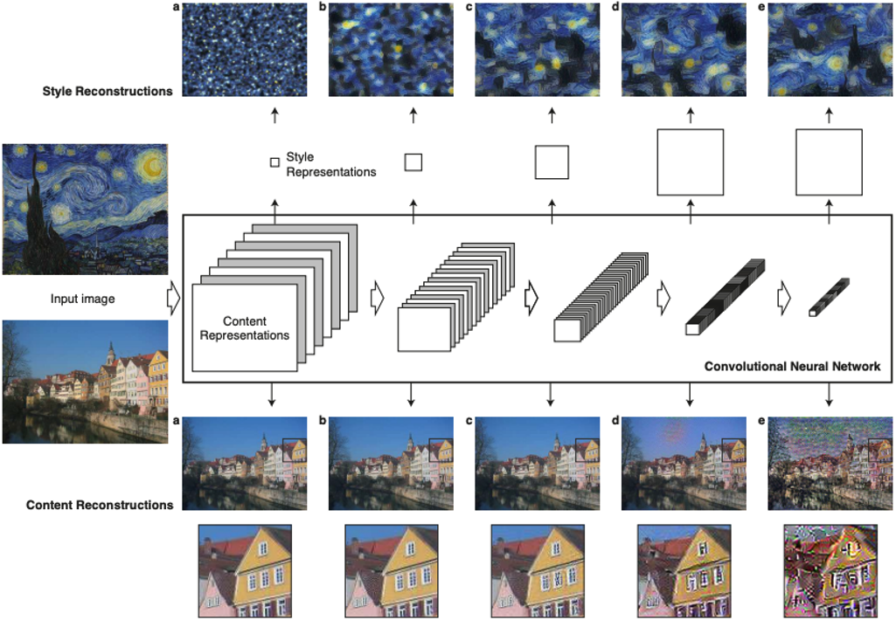
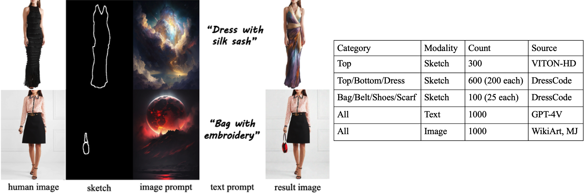
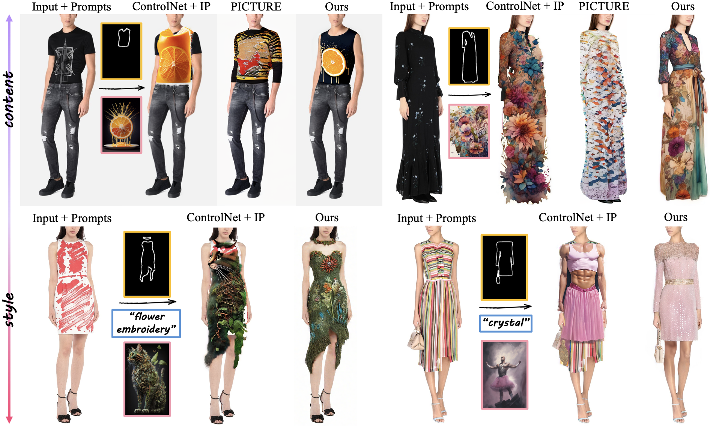
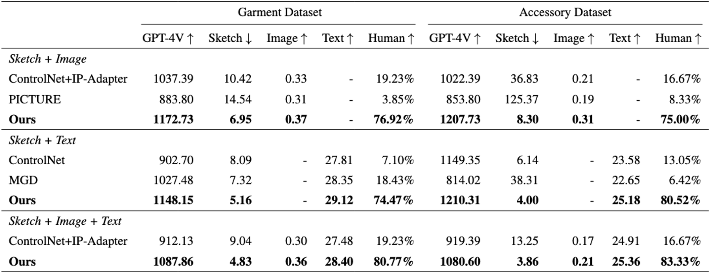
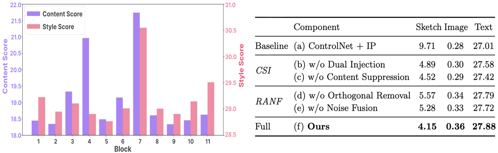
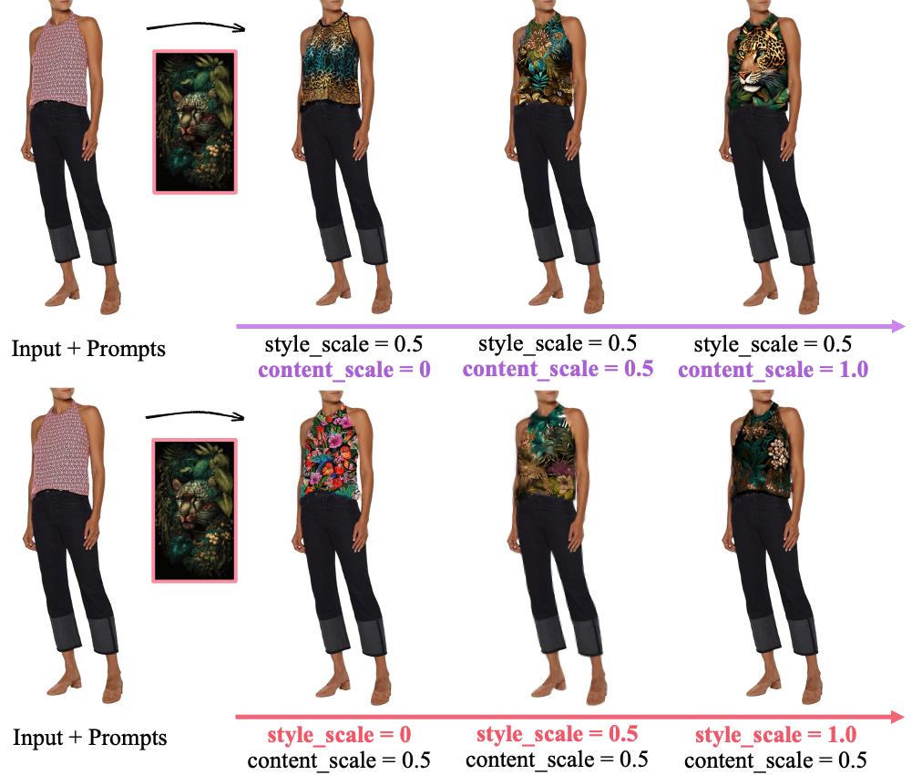

VISTA: Virtual Styling and Try-On from Any Design

의류를 디자인하고 입어볼 수 있는 기술(VTON)을 포함한 통합적인 연구가 발전
디자인 소스가 의류 이미지로 제한 → 폭 넓은 미적 감각이 담긴 디자인 소스 적용 불가
의류에 대해서만 가상 체험 기능 지원 → 신발·가방·목걸이 등 액세서리 포함 전체 코디 지원 부족

→ 의류 이미지 뿐만 아니라 예술 작품, 자연 이미지 등 다양한 디자인 소스 활용 가능, 액세서리까지 포함한 전체 가상 체험 기능 지원

스타일: 시각적 표현 방식(색상·질감)
ex) 하늘색·노란색·붓터치
콘텐츠: 구조적 정보(형태)
ex) 집의 모양

모달리티별 scale factor 조절로 조건 영향력을 제어하거나 아예 제외할 수도 있음
U-Net 블록 별 구분과 CS(Content Suppression)을 제안하여, 다양한 이미지 소스에서 원하는 요소를 선택적으로 반영 가능
Orthogonal Removal과 Noise Fusion을 제안하여 데이터셋 학습 없이 가상 체험 가능

training-free 구조 덕분에 특정 데이터 분포에 대한 과적합 없이 다양한 시각적 도메인에 안정적으로 적용 가능

평가 데이터셋은 각 모달리티(스케치/텍스트/이미지 프롬프트)를 각 1,000개 규모로 구성

ControlNet + IP 는 의류 잔여물이 남고 콘텐츠 누출 문제로 결과가 부자연스러움
PICTURE 는 콘텐츠 누출 현상은 없지만 이미지 프롬프트 반영이 부족하고 액세서리 처리가 불가능함

모든 데이터셋·지표에서 SOTA 달성, 특히 Sketch 점수의 큰 향상은 기존 의류가 잘 제거되고 스케치의 shape이 정확히 반영됨을 의미함

블록 별 정량적 실험과 각 구성요소의 ablation 실험을 통해 제안 방법의 타당성 입증

콘텐츠 스케일↑: 0에서는 콘텐츠 반영 X
→ 0.5에서 작은 콘텐츠(잎/꽃) 반영
→ 1.0에서 큰 요소(호랑이)까지 반영
스타일 스케일↑: 스타일 특징 단계적 강화

random seed 변경만으로 여러 디자인 후보를 손쉽게 탐색 가능